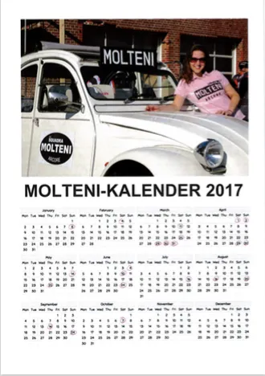

Download Molteni-kalenderen 2017

Så er vi klar til et nyt år, en ny sæson – og en vaskeægte Molteni-kalender.
Vores sæsonkalender tæller indtil videre 17 løb, 1 træningssamling og en træningslejr på Mallorca.
Men der kommer helt sikkert flere løb på programmet, når vi først er inde i sæsonen. Ligesom der er flere løb, der endnu ikke har offentliggjort deres løbsdato.

Mere hud
Hvis der nu er nogle, måske vores kvindelige fans, som sidder og er en smule skuffede over, at der ikke er mere bar hud på kalenderen – så kan vi berolige jer med, at der til næste år kommer en meget vovet kalender… Med rigeligt af hud!
Vi ønsker alle vores konkurrenter en rigtig god sæson. Vi ses derude…
– Squadra Molteni
Link til download: MOLTENI KALENDER 2017 (PDF)